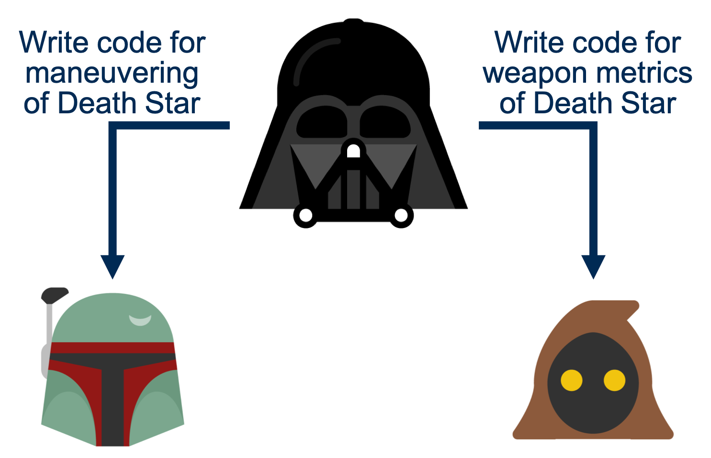

Merge Conflicts
Command Line Interface
When using Git in a team, it's inevitable that a merge conflict will arise eventually.
Merge conflicts occur when trying to pull in updates to your local branch
or when merging in another branch.
Git tries to automatically integrate differences between the branches,
but sometimes it's not clear to Git which side is correct.
Rather than making an assumption about what the correct change is,
Git will throw a merge conflict.
Some instances may result in multiple merge conflicts.
It's up to the user to resolve these merge conflicts before moving on.
It's important to understand both how a merge conflict can arise and how to resolve one.
This section presents a simple scenario of how a merge conflict may present itself.
It also addresses strategies for merge conflict resolution.
Note the arrow(s) in the bottom-right corner that controls navigation through the lesson. You may also navigate by pressing ESC and using the arrow keys.
How Merge Conflicts Arise
Let's first consider how merge conflicts arise.
They typically occur when multiple developers touch the same file.
How Merge Conflicts Arise

Team Lead
In this scenario, Darth Vader is tasking his team with various upgrades to his Death Star. First, though, he writes a file himself.
How Merge Conflicts Arise

In the new file Darth Vader has created,
he has included a few variables indicating characteristics of the Death Star.
He tests his code out and pushes to the master branch once all tests pass.
He then divvies out some tasks to his other team members.
How Merge Conflicts Arise
He has given out two tasks. One to write code for the maneuvering of the Death Star throughout the galaxy, and another for real-time monitoring of weapon metrics. Vader may or may not realize it, but it is likely that both tasks will require editing of the same file.
How Merge Conflicts Arise
While it would be ideal that either (A) team members communicate with each other about this beforehand, or (B) are instructed to do so by the team lead, workflows do not always present themselves that nicely. In this scenario, let’s assume the worst.

How Merge Conflicts Arise

Boba Fett
Boba Fett adds a maneuvering method to the Death Star code. Notice that he has changed the known radius of the Death Star from 160 km to 140 km. We can’t be sure if this was by accident or through some knowledge that was gained in the development process.

How Merge Conflicts Arise

Jawa
The Jawa also progresses in its work on weapon metrics. Oddly, though, the Jawa has also changed the radius of the Death Star -- from 160 km to 150 km. Both developers changed the same line. This sort of conflict will cause a merge conflict in Git. This is common when developers work within the same file.
How to Resolve Merge Conflicts
Unlike the previous scenario, merge conflicts are not always as easily foreseen.
Often, developers simply pull in updates and may initially have no idea why they occurred!
Given this, it's worth approaching how to solve merge conflicts in a way that a developer
would normally experience them. So let's introduce a new scenario for this and begin fresh.
In a galaxy far, far away, another software team faces another merge conflict...
(click right arrow)
How to Resolve Merge Conflicts
Obi-Wan Kenobi and Chewbacca are developing software for the Republic. Obi-Wan wants to incorporate Chewbacca's latest updates. Obi-Wan tries to pull in Chewbacca's branch, but runs into a merge conflict! The details show that the problem lies in the README file:
CONFLICT (content): Merge conflict in droid/README
How to Resolve Merge Conflicts
If we check the status of our repository, we will see that the README
is under the unmerged paths.
Unmerged paths indicate merge conflicts.
As mentioned in the snippet below, we can also abort the merge entirely,
but we do not want to do that here.
Select the down arrow to see how one would abort a merge conflict.
Aborting a Merge
If you've encountered a merge conflict, you may want to first consult with peers before proceeding. If they are not immediately available to you, you may want to abort the merge and proceed with it later. There are other reasons you may want to abort a merge as well. Regardless, if you want to abort a merge, you can use this command from the command line:
git merge --abort
How to Resolve Merge Conflicts
If you open the file that caused the conflict, you can see what exactly is happening. On the right, we've opened the file for a closer view. We see that the file has additions, which include some weird things like angular brackets, HEAD, and a long hexadecimal number.
How to Resolve Merge Conflicts
- The angular brackets indicate the beginning and end of a conflicted segment.
-
The equal signs separate the code from the two branches
- The top half is from the branch you are merging into (e.g. dev_obiwan)
- The bottom half is from the branch you are pulling changes from (e.g. dev_chewbacca)
- The long hexadecimal number indicates the commit from which you are pulling changes
- Multiple merge conflict points can exist within a single file
How to Resolve Merge Conflicts
To resolve this conflict, you must decide what the end result should be. This may require discussing it with the other developer or even the team lead. For the sake of this example, let’s say we want to include both sentences added by Obi-Wan and Chewbacca.
How to Resolve Merge Conflicts
Resolving the Conflict - Option 1: Manually
Just open the file and edit it yourself
Often times this is the easiest option for small conflicts, but may not be for larger, more complex conflicts. When you edit the file, you will need to remove all lines that Git added that begin with:
<<<<<<< or ======= or >>>>>>>
These are the lines that Git added for marking the merge conflict.
How to Resolve Merge Conflicts
Resolving the Conflict - Option 2: You or Them
You may want to select either all of your changes or all of their changes
git merge --strategy-option ours
git merge --strategy-option theirs
Beware that selecting all of yours or theirs will completely ignore changes from the other party!
How to Resolve Merge Conflicts
Resolving the Conflict - Option 3: External Editor
Set up your Git config to open an external editor for merging. The initial set up of this can be slightly complicated, but overall it is worth it. Click here for a guide on configuring merge tools.
git mergetool
How to Resolve Merge Conflicts
Resolving conflicts is very context specific. In this particular scenario, we may want to keep both additions from users. Let's assume that, whichever path you've decided to go down, you've sorted out the conflict in the file. Git still needs to be told that all merge conflicts have been resolved. First, we must stage the resolved files using git add. You'll see that Git created a copy of the original file with the extension .orig in the process of throwing a merge conflict.
How to Resolve Merge Conflicts
Now that you've staged the file, simply enter:
git commit
but without the including a commit message.
Git should open a page like the one below, containing details of the merge.
You can edit this message if you'd like, though it's not common or necessary.
You'll see this same briefing for an unconflicted merge as well.
How to Resolve Merge Conflicts
And voila – you have successfully resolved a merge conflict from the command line!